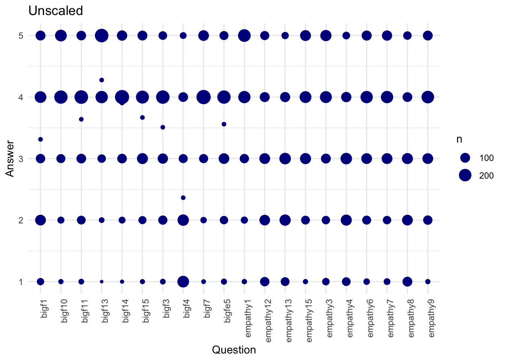
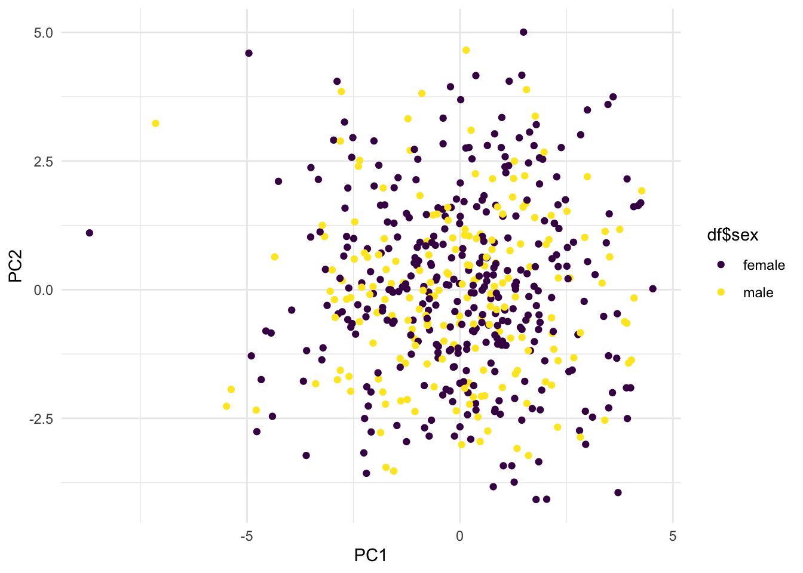
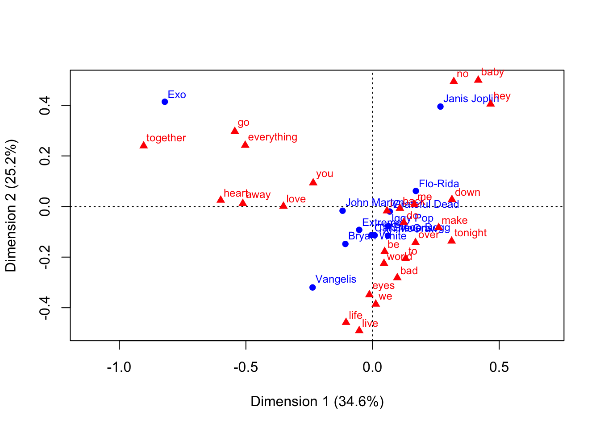

Chapter 3 Data Visualization using ggplot2
3.1 Introduction
3.1.1 Exercise 1
aesthetics: x = Hits, y = homerunsgeoms: points, 2d density / contour linesscales: x = continuous, y = continuousfacets: nonetransformations: nonecoordinate systems: cartesian
3.1.2 Exercise 2
3.1.3 Exercise 3
ggplot(Hitters, aes(y = Hits, x = HmRun)) +
geom_point() +
labs(y = "Hits", x = "Home runs") +
geom_density_2d() +
labs(title = "Density and scatter plot of baseball data") +
theme_minimal()
3.1.4 Exercise 4
ggplot(Hitters, aes(y = Hits, x = HmRun, col = League, size = Salary)) +
geom_point() +
labs(y = "Hits", x = "Home runs") +
geom_density_2d() +
labs(title = "Density and scatter plot of baseball data") +
scale_color_brewer(palette = "Set1") +
theme_minimal()## Warning: Removed 59 rows containing missing values (geom_point).
3.1.5 Exercise 5
Done.
3.2 Visual exploratory data analysis
3.2.1 Exercise 6
3.2.2 Exercise 7
3.2.3 Exercise 8
ggstudents %>%
ggplot(aes(x = grade)) +
geom_rug(col = "light seagreen", size = 0.5) +
geom_density(fill = "light seagreen", alpha = 0.5) +
labs(x = "Grade", y = "Count") +
theme_minimal()
3.2.4 Exercise 9
ggstudents %>%
ggplot(aes(x = grade)) +
geom_rug(col = "light seagreen", size = 0.5) +
geom_density(col = "transparent", fill = "light seagreen", alpha = 0.5) +
labs(x = "Grade", y = "") +
xlim(0, 10) +
theme_minimal()
3.2.5 Exercise 10
ggstudents %>%
ggplot(aes(x = programme, y = grade, fill = programme)) +
geom_boxplot() +
scale_fill_brewer(palette = "Set1") +
theme_minimal() +
theme(legend.position = "none")
3.2.6 Exercise 11
The upper horizontal line indicates the upper bound of the interquartile range (that is, the middle value / median of the 50% highest scores), and the lower horizontal line indicates the lower bound of the inter-quartile range (that is, the middle value / median of the 50% lowest scores), so that combined, 50% of the data is within this interquartile range. The middle horizontal line indicates the median. The whiskers indicate the point from the upper (lower) bound of the interquartile range to the last point within the 1.5 times the upper (lower) bound of the interquartile range.
3.2.7 Exercise 12
ggstudents %>%
ggplot(aes(x = grade, fill = programme, col = programme)) +
geom_rug(size = 0.5) +
geom_density(col = "transparent", alpha = 0.5) +
labs(x = "Grade", y = "") +
xlim(0, 10) +
theme_minimal() +
scale_fill_brewer(palette = "Set1") +
scale_color_brewer(palette = "Set1")
3.2.8 Exercise 13

3.2.9 Exercise 14 - 17
Smarket %>%
rownames_to_column() %>%
mutate(rowname = as.numeric(rowname)) %>%
filter(rowname < 201) %>%
ggplot(aes(y = Volume, x = rowname)) +
geom_line(size = 0.75, col = "dark blue") +
geom_point(col = "dark blue", size = 1) +
geom_label(x = which.max(Smarket$Volume[1:200]),
y = max(Smarket$Volume[1:200]),
label = paste0("Peak volume is ", round(max(Smarket$Volume[1:200]), 2)),
col = "dark blue",
hjust = 1.1) +
theme_minimal() +
labs(x = "Day")